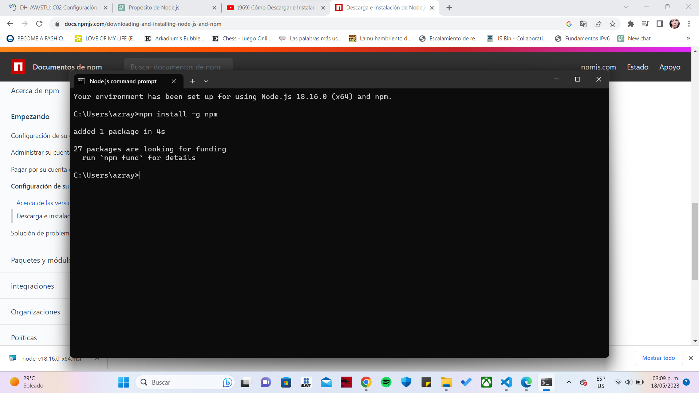

| Contenido | |
|---|---|
| Proposito del software | Proceso de instalacion |
| Video De Instalacion (auxiliar) | Evidencia de Instalacion |
El propósito de npm es proporcionar una herramienta de gestión de paquetes y dependencias para proyectos de Node.js, facilitando la incorporación de bibliotecas y módulos externos, la gestión de dependencias, la instalación y actualización de paquetes, y el desarrollo colaborativo. npm es una parte fundamental del ecosistema de desarrollo de Node.js y contribuye a la eficiencia y escalabilidad en el desarrollo de aplicaciones.
Con Node.js instalado previamente:
En este video puedes observar como instalar npm
Esta es mi evidencia de instalacion
